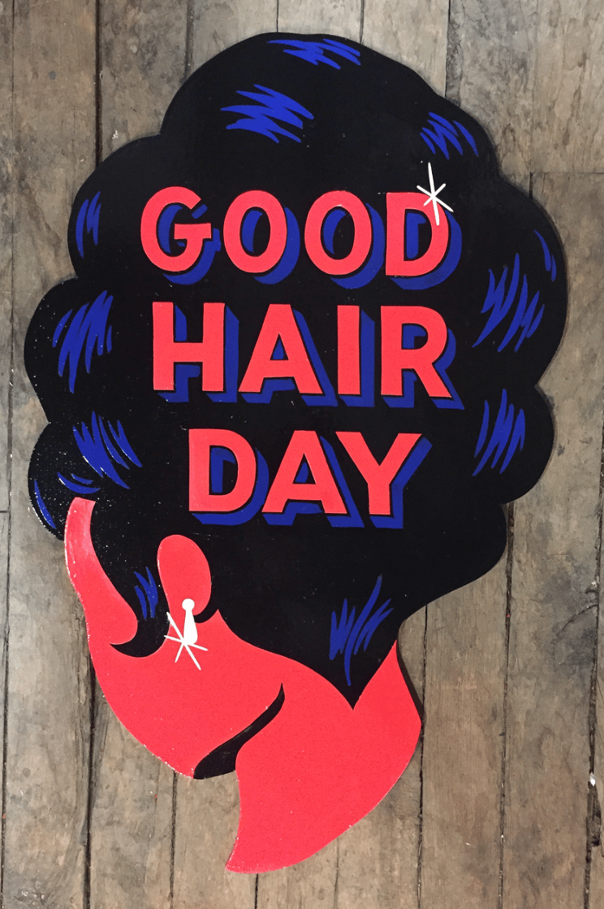

The final season of Game of Thrones wasn’t the only thing we talked about this month—though we’d be lying if we said we didn’t schedule a few dedicated debrief meetings. GoT madness aside, here’s what else caught our eyes and ears this month.

Go to Heather's pick


Katie
design associate
My great-grandfather was a neon-sign maker in Madison, Wisconsin. Because of him, I've always been fascinated with anything related to advertising. Enter Shelby Rodeffer, a Nashville-raised, Chicago-based sign painter who pulls inspiration from traditional sign painting and folk art and blends the two seamlessly. Her work is graphic and provocative, and she has a unique perspective that I love seeing.

Either Beric Dondarrion or
the Hound
Arya
Sansa
Brittany
senior editor
We lost the inimitable Doris Day this month. For those unfamiliar, Doris was one of the biggest movie stars and recording artists of the 1960s. She released almost 30 albums in less than 20 years (1949–65), sometimes dropping three in one year. Non sequitur: I had my first baby this year and, as any parent of a young child knows, having a solid repertoire of cute songs to sing to your baby is clutch. I've been brushing up on lyrics to favorite oldies, and I came across Doris’s rendition of "A Bushel and a Peck," written by Frank Loesser for the musical Guys and Dolls. I now sing it to my daughter on a daily basis, doing my best to imitate Doris’s playfulness. It’s a small tribute but it always makes both of us smile.
Galina
editorial associate
In Meeting Gorbachev, three conversations with the equally sobering and humorous Mikhail Gorbachev examine the Soviet leader's unexpected rise to power amid a geritocracy, his triumphs and failures in a quickly modernizing society, and his political legacy. Recently screened at Chicago's Music Box Theater, followed by a Q&A with the legendary Werner Herzog, the documentary is both uncharacteristically lighthearted yet still appropriately foreboding (on brand for the German filmmaker). Meeting Gorbachev is currently playing in limited release and will make its way to additional markets in June.
Go to Galina's pick
Heather
managing director
Go to Brittany's pick


David
Heather
Brittany
Go to Katie's pick


I think it’s fair to say that life is simple but difficult. By that, I mean in most situations it’s obvious what’s right and wrong, even though it might be quite hard to do what’s right. Regrettably, this philosophy doesn’t hold true for parenting. Despite the fact that I’m reasonably intelligent and I work at being a good parent, I often have no damn clue what’s right. And what’s right for one of my kids often doesn’t work for the other. So what’s a parent to do? Answer: revel in the fact that parents—and so-called parenting experts—have been utterly clueless for thousands of years. In her book Act Natural, author Jennifer Traig recounts in hilarious, sometimes crude, and always well-cited detail the history of Western parenting. Whether they took advice from Aristotle or Dr. Spock, parents have been screwing up their kids for centuries. And in tearing down the parenting skills of societies past, Traig effectively writes her own parenting manual. Her central tenet seems to be that parents need to chill the
f--- out. In her words, “Things will probably work out just fine, as things tend to do.”
In celebration of the series finale, the Leff team shares their favorite GoT character:
Delilah
Ser Jorah Mormont
Tyrion Lannister
Olenna Tyrell